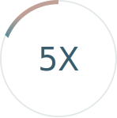
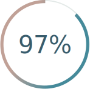
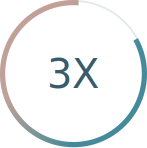

Forbes
ForbesHow Callisto Works
Callisto is a non-profit organization that develops technology designed to combat sexual assault and harassment. Our online systems are designed to empower survivors to pursue their desired outcomes and detect repeat offenders. Its flagship online system, Callisto Campus, provides three options:
Write
Save time-stamped records of an assault.
Match
Report only if another survivor names the same perpetrator.
Report
Report electronically to campus authorities.
Callisto Campus provides survivors with a confidential and secure way to create a time-stamped record of an assault and report electronically to campus authorities. The matching system is the first of its kind to allow survivors to take action upon the detection of repeat offenders.
In November 2018, Callisto announced its plans to begin developing a system to detect repeat offenders in professional industries.
Our Impact
-

MORE LIKELY TO REPORT
Survivors who visited the Callisto Campus website were 5 times more likely to report their assault than survivors who did not.
-

SATISFACTION
97% of survivors reported satisfaction with Callisto Campus.
-

FASTER REPORTING
On average, the time it took survivors using Callisto Campus to report was almost three times faster than the national average (4 months versus 11 months).
Our Partners
For the last two years, we have implemented Callisto on campuses to support student survivors of sexual assault. Our partners include Upright Citizens Brigade Theatre, St. John’s University, Hobart and William Smith Colleges, Coe College, University of San Francisco, Pomona College, Loyola Marymount University, University of Oregon, Central College, University of Southern California, University of Denver, Stanford University, and Canisius College.

Our Supporters
Callisto has an incredible community of donors and volunteers who make our work possible. Our funders include: Google.org, The New York State Health Foundation, The New York Women's Foundation, The Levi Strauss Foundation, NoVo Foundation, The Horace W. Goldsmith Foundation, PIMCO Foundation, Fast Forward, The Harnisch Foundation, and many others.
We are also supported by over 600 individual donors — many of whom are survivors or allies who share our vision of a world where survivors are supported and sexual violence is rare. Callisto is indebted to the survivors who have offered their time, energy, and feedback as we developed our tool. Their insights have made the reporting system stronger and continue to inspire us to go forward.